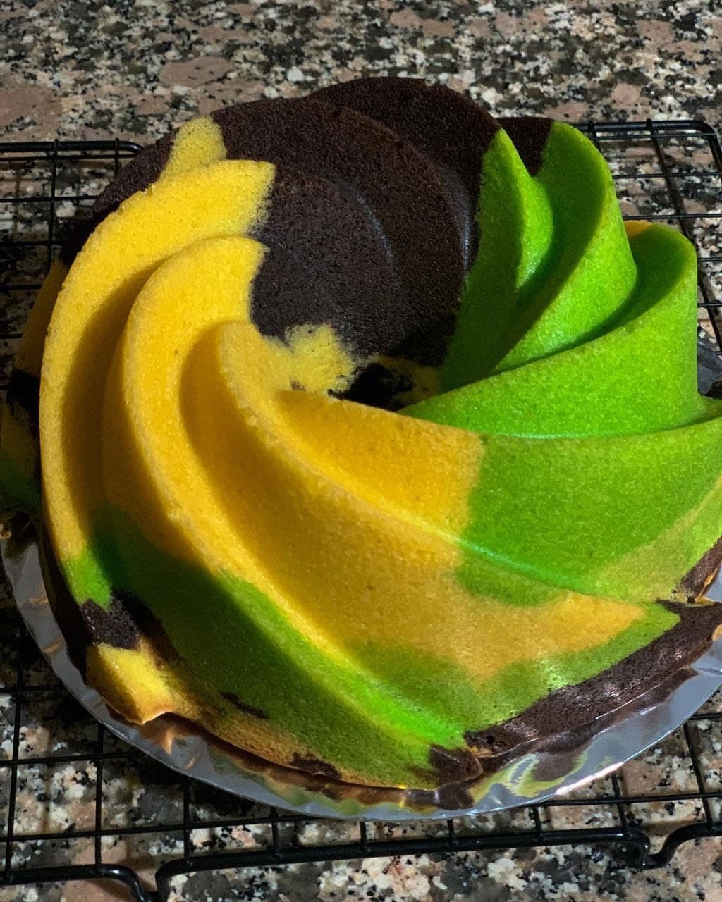

Kue Marble

Kue Marmer atau biasa disebuat Marble Cake adalah kue
yang pada dasarnya berasal dari resep pound kue yang kemudian di
isi pada loyang dengan tambahan layer adonan cokelat yang di aduk
sedikit dengan ujung pisau sehingga memunculkan motif seperti
marmer. Kue marmer ini berbahan dasar tepung terigu, butter, gula
dan telur. (Gisslen,2013)
Kue marmer ini ditemukan pada abad ke-19 dimana pola yang
terdapat pada kue marmer yaitu pencampuran adonan terang dan
gelap. Bukti mengenai kue marmer tersebut terdapat pada buku resep
perempuan Victorian American yang biasa menyajikan kue dengan
cara yang sama dengan ibu dan nenek mereka. Biasanya, hidangan
penutup pada saat itu umumnya dipanggang didalam loyang persegi
Sumber:http://library.binus.ac.id/eColls/eThesisdoc/Bab2/2014-2-01510-HM%20Bab2001.pdf